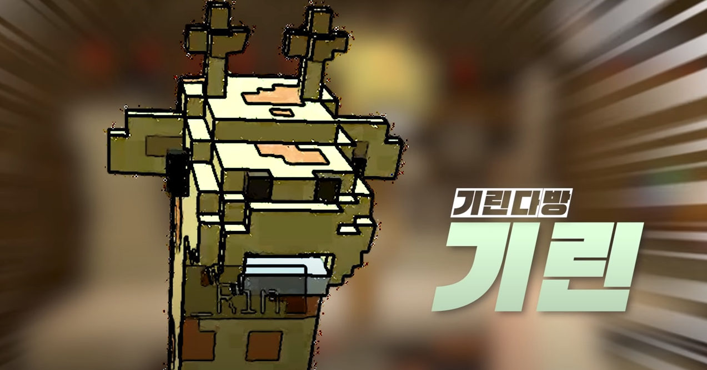

“히익↗히익↗”
“나가 이 구역 히입ㅡ합 래ㅡ퍼 GIRIN이여”
“오늘 당신은 병원 VIP가 될 거여요.” / “병원 VIP 나와라.”1
“나는 재료값만 받고 파는겨~”
“아니여! 안 자! 왜!”
“뭐? 뭐? 뭐? 뭐? 뭐? 뭐? 뭐? 뭐? 뭐?”2
“플러스 천점! 쩐점! 천점!”
|  |
| 우정리의 밥을 책임지는 기린다방의 주인, ‘김 기린’. |
| 이름 | 김기린 | 대표색 | #D0C77A |
| 동물 | 기린 | 아이콘 | |
| 나이 | 27세 | 직업 | 기린다방 주인 |
기린다방에서 음식을 팔고 있으며, 파는 메뉴는 회차마다 바뀐다. 기린답게 목이 길어서 문을 통과할 때에는 목을 직각으로 접어 다닌다.3
처음 본 자빱에게도 금세 시식해보라며 음식을 안겨줄 만큼 친절해 보인다.
목이 긴 탓에 팔이 머리까지 닿지 않아서 목욕탕에 가면 다른 주민들이 씻겨 준다. 작물도 세로로 심는 한편, 핫도그와 꼬치 같은 기다란 음식을 파는 터미널 상인을 매우 싫어할 만큼 자기의 긴 목을 엄청나게 의식하고 있는 듯하다.
상추와 자작나무 잎을 좋아한다. 하루에 상추 1스택(64개)을 먹는다고 한다. 따뜻한 파인애플 피자도 무척 좋아하는 듯.